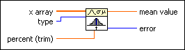
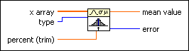

Measures of Mean VI
Owning Palette: Probability & Statistics VIs
Requires: Full Development System
Computes the central tendency of the data values in x array.

 Add to the block diagram Add to the block diagram |
 Find on the palette Find on the palette |
Owning Palette: Probability & Statistics VIs
Requires: Full Development System
Computes the central tendency of the data values in x array.

| Add to the block diagram |
Find on the palette |
 |
x array specifies the data set. | ||||||||||
 |
type specifies the type of mean to compute.
|
||||||||||
 |
percent (trim) specifies the percentage of data to trim before computing the trimmed mean. Use this input to ignore outlier values in x array. LabVIEW trims the percentage you specify from both the lowest and highest values of x array. Thus, the total amount trimmed equals twice the value of percent (trim). | ||||||||||
 |
mean value returns the mean measure of the data in x array. | ||||||||||
 |
error returns any error or warning from the VI. You can wire error to the Error Cluster From Error Code VI to convert the error code or warning into an error cluster. |
The trimmed and median measures of mean resist outlier values in the data set and usually are more robust than the other measures of mean.